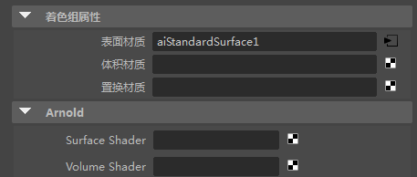
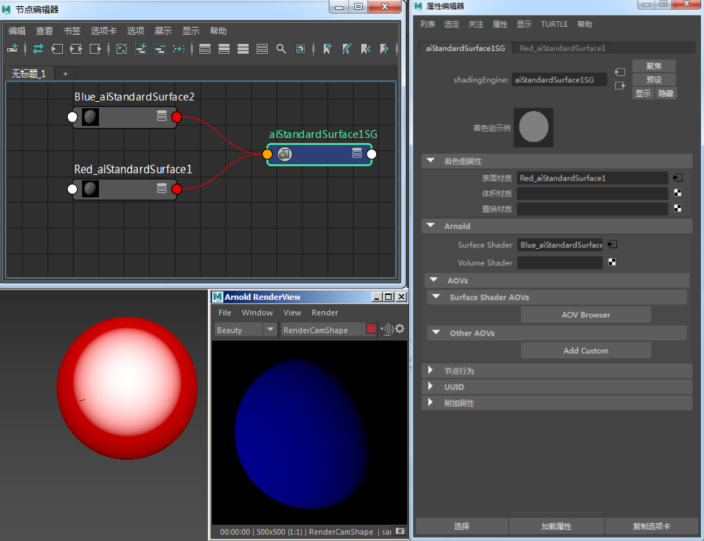
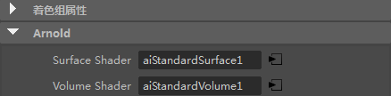
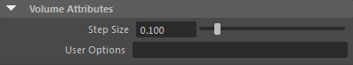
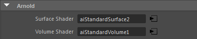
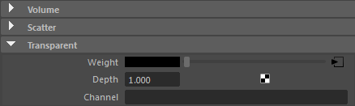
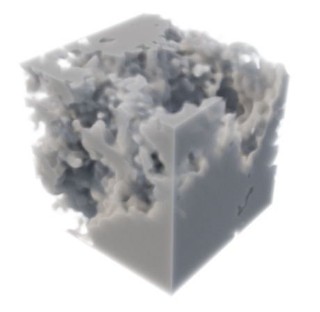

着色引擎
下面介绍了属于 Maya 着色引擎的 Arnold 着色组属性：
曲面着色器

“着色引擎”(Shading Engine) 的“Arnold”部分中有一个 surface_shader 窗口。当有着色器连接到此窗口时，系统将使用此着色器，不使用 Maya 曲面着色器。当没有连接着色器时，系统将使用 Maya 曲面着色器，这样就不会破坏向后兼容性。当您需要在 Maya 视口中显示的着色器与指定给同一曲面的着色器不同时，此功能会很有帮助。因为每个渲染器都有自己的曲面着色器窗口，您可以将 Maya 着色器和 Arnold 着色器连接到同一个着色引擎。
在下面的示例中，蓝色 standard_surface 着色器连接到红色 standard_surface 着色组的 Arnold“曲面着色器”(Surface Shader)属性。球体在视口中使用红色 standard_surface 着色器着色，但渲染为蓝色 standard_surface 着色器。

蓝色 standard_surface -> 曲面着色器
体积着色器

“着色引擎”(Shading Engine)的“Arnold”部分中有一个“体积着色器”(Volume Shader)窗口。当有着色器连接到此窗口时，系统将使用此着色器，不使用 Maya 曲面着色器。当没有连接着色器时，系统将使用 Maya 曲面着色器，这样就不会破坏向后兼容性。
| 有关演示此工作流的 Maya 场景，请单击此处。 |
|---|
Arnold 可以将形状容器用于体积渲染点、球体和长方体基本体。有关如何将网格渲染为体积的信息，请单击此处。
示例
以下示例显示了如何将自定义体积着色器连接到材质的着色组：
- 首先，您需要为要指定体积着色器的网格或粒子设置 *step_size*（值越小，渲染时间越长）。

多边形网格的体积属性
- 对于指定给球体的着色器的着色组，将 standard_volume 着色器连接到 Arnold 属性中的 volume_shader。

标准体积连接到某一标准曲面着色器的“着色组属性”(Shading Group Attributes)中的“体积着色器”(Volume Shader)
- 创建 3D 噪波纹理，并将它连接到 standard_volume 的 transparent_weight 属性（在本例中，使用了 Maya“云”纹理）。

Maya 云 -> standard_volume 的透明度
完成的着色器网络应如下图所示：

最终，您应获得如下所示的结果：